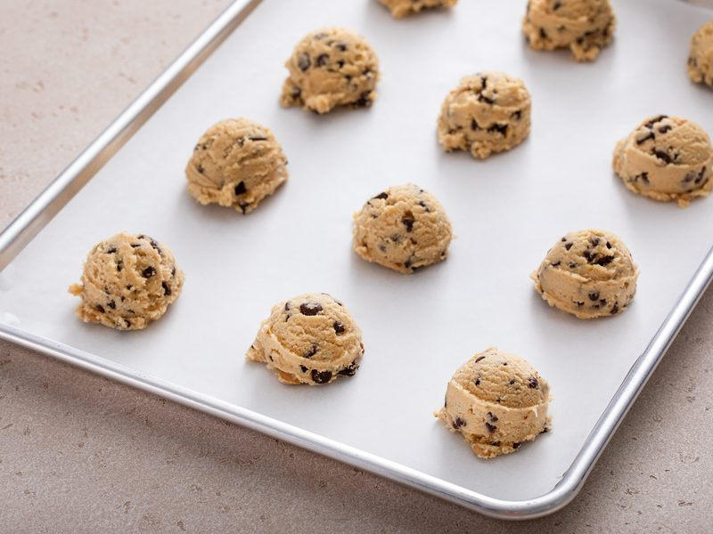
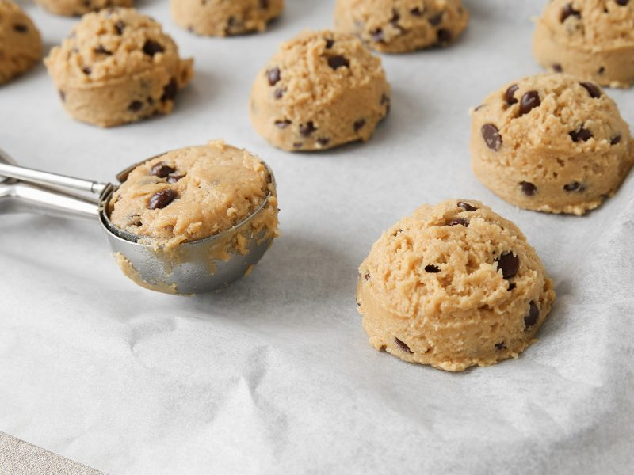
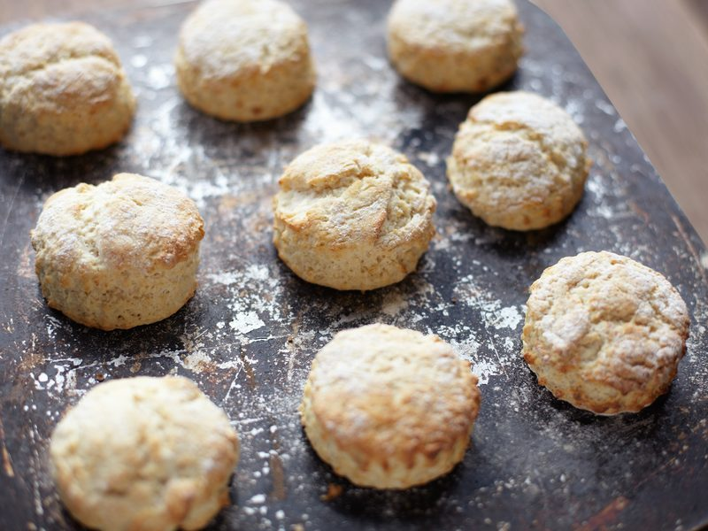

Bake Straight From Frozen: Why I Never Thaw Cookie Dough
Thawing cookie, scone and crust dough on the counter collapses the starch gel you worked for. Bake it straight from the freezer instead. Here's why.
- Don't thaw starchy dough. Cookies, scones, biscuits and crust go from the freezer straight into the oven.
- Why: when frozen dough warms slowly, the ice turns into free water and the starch gel collapses.
- What you get: better structure, evenly spread fat, a softer bite and at least one extra day of shelf life.
- The exception: bakes that are mostly fat and protein are fine to thaw at room temperature.
- Timing: add a couple of minutes to the bake and watch the color, not the clock.
At my bakery, we don't make cookie dough when an order comes in. We make it ahead, let it rest, scoop it, freeze it, and bake it the second we need it. Straight from the freezer into the oven, no thawing. It's how we get the same cookie every single time, and it's the easiest habit you can steal for your own kitchen.
How we do it at the bakery
- Make the dough and let it hydrate. A few hours on the counter, or overnight in the fridge. This gives the flour time to soak up the liquid, which matters even more with gluten-free flour. (More on that in how to handle flour for better texture.)
- Scoop it. Portion the cookies, scones or biscuits onto a lined tray. For crust, line the pan.
- Freeze it solid. Once they're hard, move them to a bag or container so they don't pick up freezer smell.
- Bake from frozen. When you want them, put them on a tray and straight into a fully preheated oven.

Why thawing on the counter is a mistake
Most people pull frozen dough out and let it sit at room temperature before it goes in the oven. That's a huge no-no, especially with gluten-free flour. Gluten-free dough isn't forgiving. It hurts the taste, the texture and the shelf life.
Here's what's happening. In frozen dough, the water is locked up as ice. When the dough warms up slowly, that ice melts into free, unbound water. That water breaks down the starch gel you worked so hard to build when you mixed and rested the dough, and the structure collapses. The cookie spreads, the scone goes flat, the crust gets soggy.
Put it in the oven frozen, and the heat sets the outside before the inside has a chance to fall apart.
What you get when you bake from frozen
- Your starch structure stays intact. Better rise, better shape.
- Your fat gets distributed evenly. It melts as the dough bakes instead of pooling before it goes in.
- Longer shelf life. At least one extra day, because the starch holds onto its water instead of losing it.
- A softer bite. More tender cookies and scones, every time.
Same reason I freeze my pie crust before baking, by the way. Here's how that works for crust.

When it's okay to thaw
It comes down to what the bake is made of.
| Bake | What it's heavy in | What to do |
|---|---|---|
| Cookies, scones, biscuits, pie crust | Starch | Straight from the freezer into the oven |
| Bakes that are mostly fat and protein | Fat and protein | Fine to thaw at room temperature |
Starch is the part that falls apart when it thaws slowly. Fat and protein hold up, so those bakes are more forgiving.
A few tips for baking from frozen
- Preheat all the way. Frozen dough in a half-hot oven just thaws on the tray, which is the thing we're avoiding.
- Add a couple of minutes. Use the same temperature, and go by color, not the timer.
- Freeze them separated. Freeze on a tray first, then bag them, so you can bake two or twenty.
- Wrap it well. Airtight bags or containers keep out freezer smell. More on that in how to make your bakes last longer.
Are you a thaw-first baker or a straight-in-the-oven baker?

Baked fresh at our gluten-free bakery
Twenty years of gluten-free, vegan baking in Long Island City. Skip the freezer and get ours.
Shop my bakery →